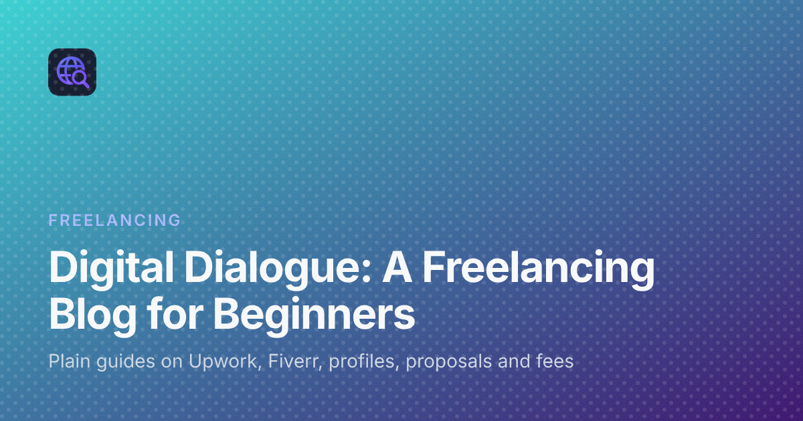

Digital Dialogue: A Practical Freelancing Blog for Beginners
Starting out as a freelancer comes with a long list of questions. Which platform should you join? What goes in a profile? How do proposals work, what do the fees take, and how do you know whether a job is worth bidding on? There is plenty of advice online, but a lot of it is either too vague to act on or too long to finish.
Digital Dialogue is a freelancing blog I run to answer those questions in plain language. This post introduces the site: what it covers, who it is written for, and where to start reading if you are new.
What Digital Dialogue is
Digital Dialogue is a practical blog on freelancing, focused on beginners working on Upwork and Fiverr. It publishes guides on platforms, profiles, proposals, fees and landing client work. The aim is simple: each post should help a reader choose, start or fix something, and give a clear next step rather than theory.
The site is based in Pakistan, and some posts speak directly to freelancers there, such as the guide to the best freelancing platform for beginners in Pakistan. Most of the advice applies to anyone starting on the big marketplaces.
Who it is for
- Complete beginners who have not yet picked a platform and want to understand how the marketplaces work.
- Students who want to start freelancing without professional experience. There is a guide written for exactly that case.
- New Upwork freelancers who have an account but are not getting replies to proposals.
- Web developers selling freelance services who want help choosing jobs and pricing websites.
What you will find on the site
All of the freelancing guides live in one category, and they fall into a few clear groups.
How the platforms work
If you are not sure where to start, begin with the two basics. The guide on what is Upwork explains how the marketplace fits together: profiles, proposals, contracts, milestones, payments and reviews, in the order you meet them. The companion guide on what is Fiverr covers the gig model, where sellers publish ready-made packages, buyers place orders, and the platform holds the payment until the delivery is accepted or the order completes.
Once both make sense, there are comparison posts: the difference between Upwork and Fiverr, which freelance platform is best for you, and a look at Upwork and Fiverr alternatives such as Freelancer.com, Guru, PeoplePerHour, Contra and Toptal.
Profiles and proposals
A second group helps you get noticed and win work. There are guides on creating an Upwork profile that clients actually open, from the title and photo to the overview, portfolio, skills and rates, and on writing an Upwork proposal with a clear structure, what to cut and common beginner mistakes. A step-by-step guide on using Upwork as a beginner covers account setup, Connects, first proposals and payouts.
Fees, Connects and pricing
Money questions get their own posts. One explains how the Upwork freelancer service fee comes out of a payout and how to work back from what you want to keep. Another helps you decide when a job is worth the Connects it costs. A pricing guide walks through how much to charge for a website as a freelancer.
After the first job
Winning a job is not the end of the work. There are guides on what to do after you win an Upwork job, such as matching the offer to your proposal and waiting for the milestone to be funded, and on following up with a client to earn the next job.
The free freelance calculators
Besides the articles, the site has a small set of freelance calculators that run in the browser with no sign-up:
- Upwork Fee Calculator to see your take-home pay after the freelancer service fee and withdrawal costs.
- Upwork Connects Calculator to see what your proposals cost and what you paid for each reply, interview and contract.
- Freelance Rate Calculator to work out the minimum hourly rate that covers your costs, platform fees and unpaid hours.
You enter amounts in US dollars, and you can see results in Pakistani rupees by choosing PKR and entering your exchange rate. Each calculator page lists the Upwork pages its fee rules come from and the date they were checked, and the default values are clearly marked as examples to replace with the numbers on your own offer.
How to use the blog: a reading order for beginners
If you are new, a simple path through the site keeps things manageable:
- Understand the platforms. Read the Upwork and Fiverr explainers first, then one comparison post.
- Pick one platform. Use the platform comparison guides to choose where to start, instead of building profiles everywhere at once.
- Build the profile. Follow the profile guide and, if you choose Upwork, the step-by-step beginner guide.
- Check the numbers. Before you bid, run a job through the fee and Connects calculators so you know what you keep and what a proposal costs.
- Write and send proposals. Use the proposal guide, then the guide on what to do after you win a job.
Longer guides, such as the Upwork and Fiverr explainers, open with a contents list and a reading time and end with an FAQ, so you can jump to the part you need.
Frequently asked questions
Is Digital Dialogue free to read?
Yes. The articles and the calculators are free, and the calculators do not need a sign-up.
Is it only about Upwork?
Upwork gets the most detailed coverage, but the site also explains Fiverr, compares the two, and looks at other platforms.
Where should a complete beginner start?
Start with the guides on how Upwork and Fiverr work, then read a platform comparison before you create a profile.
Do the calculators include income tax?
No. The calculators leave tax out, and the fee percentage should be replaced with the one shown on your own offer.
Wrapping up
Freelancing gets easier once the platform rules, the fees and the basic steps stop being a mystery. Digital Dialogue tries to make each of those steps clear and usable the same day. If you are just starting, open the platform guides, pick one marketplace, and work through the posts in order.